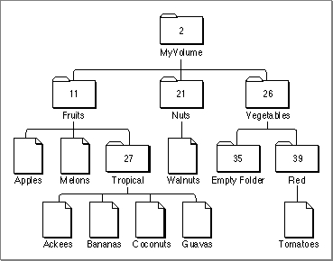

Legacy Document
Important: The information in this document is obsolete and should not be used for new development.
Important: The information in this document is obsolete and should not be used for new development.


The Hierarchical File System
The Macintosh Operating System uses a method of organizing files called the hierarchical file system (HFS). In HFS, files are grouped into directories (also called folders), which themselves are grouped into other directories, as illustrated in
Figure 1-4. The number listed for each directory is its directory ID. The directory ID
is one component of a file system specification, as explained in the next section, "Identifying Files and Directories."Figure 1-4 The Macintosh hierarchical file system

The Finder is responsible for managing the files and folders on the desktop. It works with the File Manager to maintain the organization of files and folders on a volume. The hierarchical relationship of folders within folders on the desktop corresponds directly to the hierarchical directory structure maintained on the volume. The volume is known as the root directory, and the folders are known as subdirectories, or simply directories.
A volume appears on the desktop only after it has been mounted. Ejectable volumes (such as 3.5-inch floppy disks) are mounted when they're inserted into a disk drive; nonejectable volumes (such as those on hard disks) are mounted automatically at system startup. When a volume is mounted, the File Manager places information about the volume in a nonrelocatable block of memory called a volume control block (VCB). The number of volumes that can be mounted at any time is limited only by the number of drives attached and available memory.
When a volume is mounted, the File Manager assigns a volume reference number by which you can refer to the volume for as long as it remains mounted. You can also identify a volume by its volume name, a sequence of 1 to 27 printing characters, excluding colons (:). (The File Manager ignores case when comparing names but does recognize diacritical marks.) Whenever possible, though, you should use the volume reference number to avoid confusion between volumes with the same name.
When an application ejects a 3.5-inch disk from a drive, the File Manager places the volume offline. When a volume is offline, the volume control block is kept in memory and the volume reference number is still valid. If you make a File Manager call that specifies that volume, the File Manager presents the disk switch dialog box to the user. Figure 1-5 shows a sample disk switch dialog box.
- Note
- A volume reference number is valid only until the volume is unmounted. If a single volume is mounted and then unmounted, the File Manager may assign it a different volume reference number when it is next mounted.

Figure 1-5 The disk switch dialog box
When the user drags a volume icon to the Trash, that volume is unmounted; the
volume control block is released, and the volume is no longer known to the File Manager. In particular, the volume reference number previously assigned to the
volume is no longer valid.Each subdirectory is located within a directory called its parent directory. Typically, the parent directory is specified by a parent directory ID, which is simply the directory ID of the parent directory. The File Manager assigns a special parent directory ID to a volume's root directory. This is primarily to permit a consistent method of identifying files and directories using the volume reference number, the parent directory ID, and the file or directory name. See the next section, "Identifying Files and Directories," for details.
For the most part, your application does not need to be concerned about, or keep track of, the location of files in the file system hierarchy. Most of the files your application opens and saves are specified by the user or another application, and their location is provided to your application by either the Finder or the Standard File Package. One notable exception here concerns preferences files, which are typically stored in the Preferences folder in the currently active System Folder. See "Using a Preferences File" on page 1-36 for instructions on finding preferences files.
- Note
- In addition to files, folders, and volumes, a fourth type of object, namely an alias, might appear on the Finder desktop. An alias is a special kind of file that represents another file, folder, or volume. The Finder and the Standard File Package automatically resolve aliases before passing files to your application, so you generally don't need to do anything with aliases. For more information on working with alias files, see the chapter "Finder Interface" in Inside Macintosh: Macintosh Toolbox Essentials and the chapter "Alias Manager" in this book.